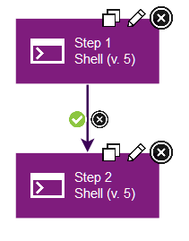
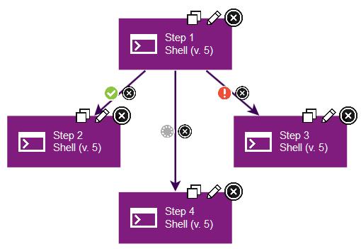

Conditional processes
Every connection (except connections from the Start step) has a delete tool and conditional flag. The conditional flag sets a condition on a connection.
To change a flag value, cycle through possible values by clicking the flag.
The possible conditional flags are as follows:
success: The process is complete.fail: The process did not finish.both: The process is complete or the process did not finish. Either status is acceptable, and the next step can start.
By default, all connections have the flag set to checked (success), meaning the originating step must end processing before the target step starts to process.
The following figure shows two steps that are connected with a success conditional flag, which is the default for new connections. In this case, if the first step finishes, the process follows the connection to the second step. If the first step fails, the process ends, and the second step does not run.

A step can have multiple connections with different conditional flags. For example, the following figure shows a step with three connections:
- The connection to step 2 has a
successflag. Step 2 runs if the first step finishes. - The connection to step 3 has a
failureflag. Step 3 runs if the first step fails. - The connection to step 4 has a
bothflag. Step 4 runs regardless of whether step 1 finishes or fails.

Note: If a step has multiple connections that eventually reach the same target step, determining whether the target runs depends on the value of the intervening flags. If all of the intervening connections have success flags, the target runs only if all the steps are successful.
For an entire process to succeed, it must reach a Finish step. If it does not end with Finish, the process fails.
Parent topic: Process step types and logic